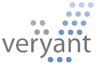
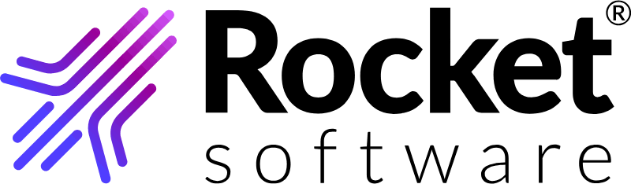

El canal español de Servoy, IsCobol y RMCobol
Para ISVs y SSVs españoles, medianos y consolidados, con base tecnológica heredada — y para el responsable de IT que evalúa esta ruta. Registro técnico. Sin carrito ni precios: esta página es una credencial, no una tienda.
Por qué existimos en esta capa
Los tres fabricantes con los que trabajamos operan en España a través de nosotros — así está organizado el sector. El fabricante construye y evoluciona el producto; el partner aporta la proximidad: idioma, zona horaria y conocimiento del negocio del cliente. Son papeles complementarios. Nosotros somos ese canal en España para Servoy, Veryant y Rocket Software: la relación contractual, el soporte local y, según la tecnología, la construcción y el mantenimiento de lo que se monta encima.
Servoy, IsCobol y RMCobol
Prueba de competencia, no un catálogo: esto es lo que hacemos, técnicamente, con cada una de las tres.
Servoy
DKtec es reseller no exclusivo desde 2025. Puede revenderlo, construir tu aplicación de negocio sobre él y también ofrecerlo como producto propio.
Ver más →
IsCobol
DKtec es distribuidor/reseller no exclusivo desde 2025, con soporte local y migración acompañada. Veryant lista a DKtec como su partner en España, Andorra y Portugal.
Ver más →
RMCobol
DKtec es partner no exclusivo desde 2025, con el alcance más amplio: reventa, apoyo en la venta, demostraciones y servicios profesionales de implementación.
Ver más →Reventa, soporte, migración, desarrollo y soporte continuado
Aquí no nos limitamos a venderte la licencia. Somos partner local de los tres fabricantes, así que la contratas con nosotros y el soporte lo pides en español — pero además hacemos el trabajo: llevamos tu sistema COBOL a tecnología moderna sin reescribirlo, construimos sobre Servoy la aplicación que tu negocio necesita, y nos quedamos después para mantenerla.
Nos apoyamos en partners especializados para ejecutar, y gobernamos la entrega: tú tienes un interlocutor, no una lista de proveedores. Y como trabajamos con las tres tecnologías, la conversación empieza por tu situación y no por un producto.
Qué sabemos de cada tecnología
Servoy
Plataforma low-code para construir aplicaciones de negocio propias — gestión, control de producción, seguimiento de pedidos — que no existen "de catálogo". Pensada para desarrolladores profesionales, no para arrastrar cajas: control total del código por debajo, velocidad por encima. Una sola base para navegador, móvil y escritorio. Fabricante: Servoy BV (Ámsterdam, Países Bajos).
Por qué vía DKtec: Servoy llega a España a través de su canal — nosotros somos ese canal, con la relación y el soporte en local.
Nuestro papel: reventa, soporte local y construcción de la aplicación sobre la plataforma — el contrato lo respalda expresamente vía cláusula stand-alone, que permite ofrecerlo también como producto propio de DKtec, no solo como licencia de un tercero.
IsCobol
Toma un programa COBOL y lo traduce para que funcione sobre Java moderno sin reescribirlo. El sistema sigue haciendo lo mismo, pero ya puede ejecutarse en cualquier servidor actual — incluso desde un navegador — y deja de depender de máquinas obsoletas, cada año más caras de mantener y con menos gente capaz de tocarlas. Fabricante: Veryant LLC (San Diego, EE. UU.).
Por qué vía DKtec: el fabricante opera en Europa por canal; para un sistema COBOL crítico, tener el soporte en tu idioma y tu zona horaria es una ventaja concreta. La propia web de Veryant lista a DKtec como su partner para España, Andorra y Portugal — la única de las tres relaciones confirmada públicamente por el fabricante.
Nuestro papel: reventa, soporte local y migración acompañada.
RMCobol
Motor que permite que una aplicación COBOL funcione igual en Windows, Linux o Unix sin adaptar el código para cada sistema — la opción más clásica y probada, pensada sobre todo para software que debe comportarse igual dondequiera que lo instale el cliente. Fabricante: Rocket Software (Waltham, Massachusetts), que en 2024 incorporó el negocio de modernización de aplicaciones de OpenText, ampliando su base de clientes y su red de partners. En septiembre de 2025 anunció mejoras en su familia COBOL orientadas a modernizar sin disrupción: asistencia de desarrollo con GenAI opcional, soporte para procesadores ARM y despliegue de bajo riesgo hacia cloud y contenedores.
Por qué vía DKtec: Rocket opera con una red global de partners locales; en España, esa cercanía la aportamos nosotros.
Nuestro papel: el alcance contractual más amplio de los tres — reventa, apoyo en la venta y servicios profesionales de implementación.
Dos caminos, según lo que necesites — no dos generaciones
Las dos tecnologías resuelven necesidades distintas sobre una misma base COBOL. No hay una que sustituya a la otra: son dos partners nuestros, y elegir entre ellas depende de tu situación, no de cuál es "más moderna".
RMCobol — continuidad y portabilidad
Cuando la prioridad es que la aplicación siga funcionando igual en cualquier sistema operativo, con su propio runtime y sin cambiar de arquitectura. Riesgo mínimo.
IsCobol — más recorrido tecnológico
Cuando la prioridad es que ese mismo COBOL pase a ejecutarse sobre Java y se abra al navegador y a la infraestructura moderna. Más cambio, más alcance.
Trabajamos con las dos, así que la conversación empieza por tu situación, no por un producto.
Catálogo Rocket con encaje en tu sistema
Nuestro contrato con Rocket cubre el catálogo de Infrastructure, Data y Application Modernization en territorio EMEA y LATAM. Estos son los que más encajan con el mismo tipo de cliente que RMCobol:
Rocket MultiValue (UniData/UniVerse)
Bases de datos MultiValue con casi 60 años de historia continuada bajo distintos fabricantes — mismo perfil de cliente que RMCobol: un sistema de negocio antiguo que funciona y que no se quiere perder.
Rocket jBASE
Otra base MultiValue, sin máquina virtual: se compila como ejecutable del sistema operativo. Filosofía más cercana a RMCobol que a IsCobol.
Rocket Modern Experience
No cambia el motor, cambia la cara: convierte pantallas verdes de mainframe o IBM i en interfaz web moderna, sin tocar la lógica de negocio.
Rocket DataEdge
Conecta datos de mainframe, sistemas distribuidos y nube para prepararlos para analítica e IA — el puente natural hacia nuestra línea de Servicios IA una vez modernizado el motor.